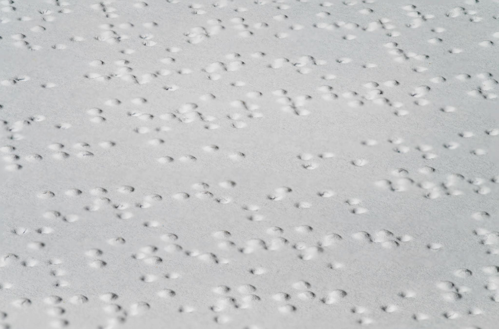

Archive of Encoded Information
05 Systems

001
Braille
Reading Through Touch
1829 / France / Louis Braille
A tactile writing system that transforms language into patterns of raised dots, allowing people to read through touch.
Developed by Louis Braille in the 1820s, the system was inspired by Charles Barbier's earlier raised-dot writing method. Braille simplified it into a six-dot cell and published his system in 1829.
2 × 3 grid. Different combinations of raised dots represent letters, numbers, and symbols.
Explore Related Systems